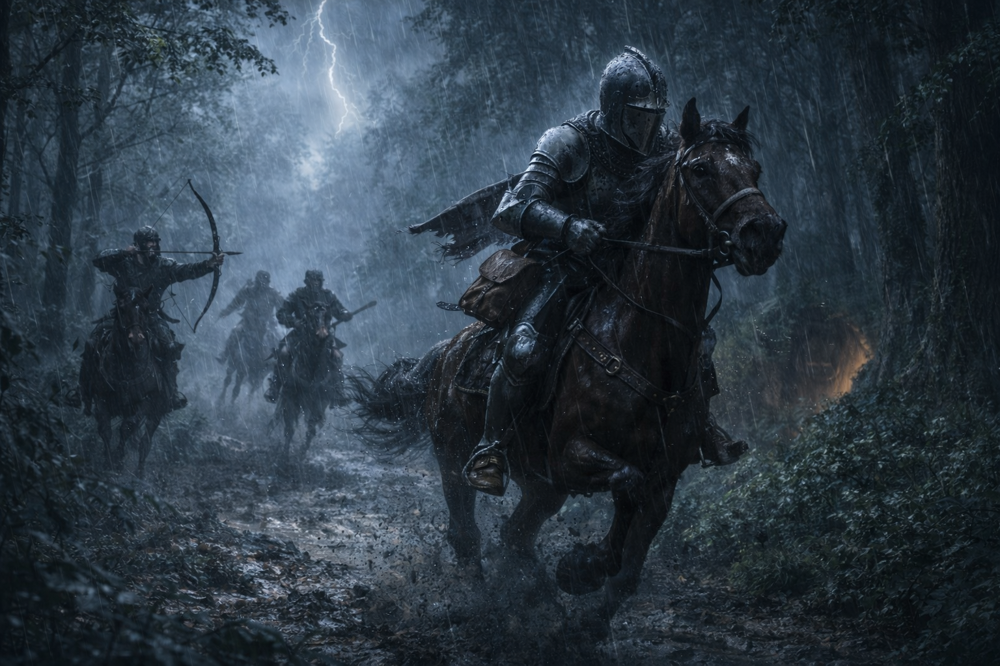
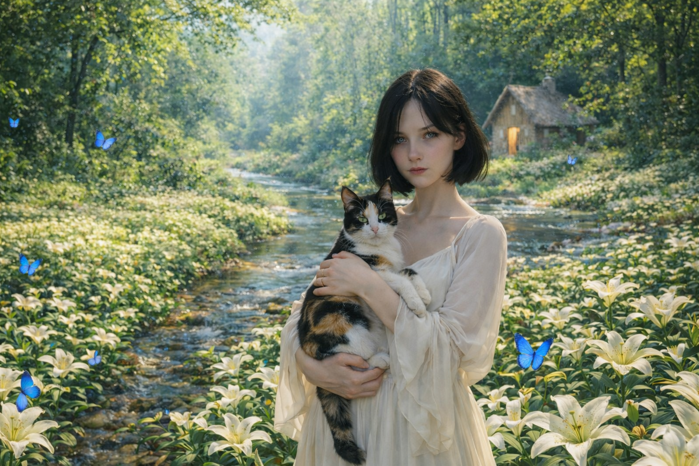
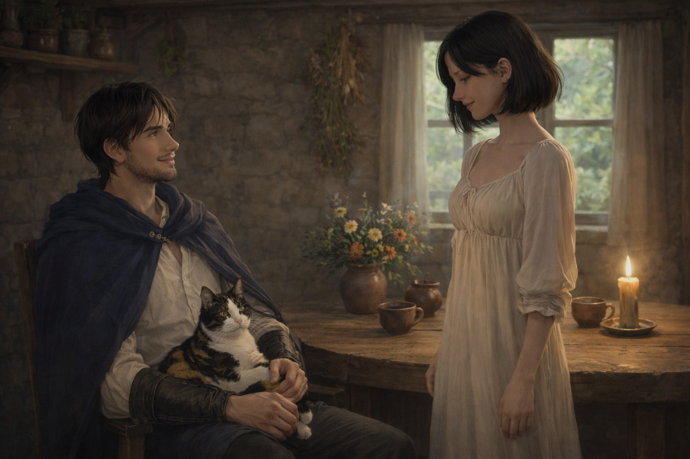
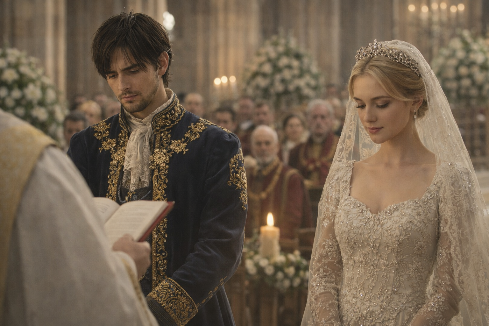
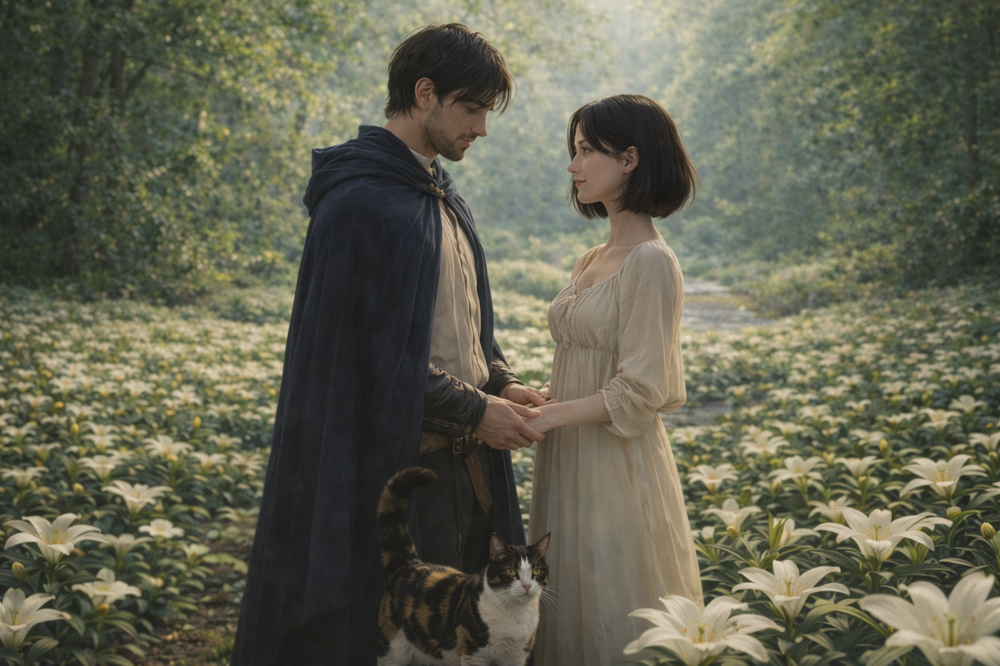

XIV век. Гроза и ливень. Стук копыт по грязной, небрежной тропе. Лошадь мчалась быстрее прежнего. Стук доспехов был громким и слышался издалека. Свист. — Он там! — донёсся крик из-за деревьев. — Быстрее, эта тварь сейчас сбежит! Принц Кравец мчался по густому лесу. Письмо, которое он вёз в королевство отца, лежало в мешке, свисавшем у него на поясе. Хотя на нём был надет шлем, капли дождя залетали внутрь через прорезь забрала. Лошадь почти поскальзывалась на густой и скользкой грязи. Стрела вонзилась в дерево рядом с ним. — Быстрее! У него письмо! — кричал вражеский командир позади. Погоня длилась уже два часа. Лошади разбойников сбавили ход от усталости. Принцу удалось оторваться от них на небольшое расстояние. Сквозь непрерывный ливень Кравец увидел пещеру, которую на мгновение осветила молния. Свернув к ней, он направил лошадь прямо к входу. — Брр. Этот гонец куда-то пропал. Ищите по следам его кобылы! — раздался по всему лесу крик командира. — Сэр! Тут след! — окликнул его солдат. — Тогда быстрее идём по нему. Преследовали они недолго. — Что за чёрт? Где следы? Почему они пропали? Не мог же он просто испариться? Из-за дождя и качающихся деревьев они не заметили пещеру и ушли искать в другом направлении.

Добравшись до пещеры, принц поспешил найти укрытие, чтобы, даже если преследователи обнаружат вход, им пришлось искать его ещё дольше. Пройдя несколько метров вглубь, он заметил расщелину, из которой доносились свет и пение птиц. — Постой здесь, друг. Я посмотрю, что там, и сразу вернусь, — сказал он лошади и направился к свету. Попытавшись протиснуться в доспехах, он потерпел неудачу, поэтому начал снимать нагрудную броню, шлем и наручи. После этого он смог пройти сквозь узкий проём в скале. — Это… что…? Кравец замер. Он увидел то, о чём писали лишь в небылицах. Его ослеплял яркий свет, которому неоткуда было взяться в пещере. Перед ним стоял аккуратный, невысокий домик. Поле вокруг было покрыто цветами — одними только лилиями, ярким кольцом окружавшими дом. Повсюду порхали синие бабочки. Ручеёк, огибавший поле по кругу, сверкал и был прозрачнее стекла. — Здравствуй, — донёсся голос позади. Принц обернулся и увидел девушку. Прекрасную. Её глаза сверкали голубизной. Платье было белым и длинным, до самой земли. Волосы — чёрные, как ночь. В руках она держала букет только что сорванных лилий. — Здравствуй, — ответил он, немного смущаясь. — Вы потерялись? — Нет, я бежал от разбойников, увидел пещеру и решил здесь спрятаться. — Давайте я напою вас чаем. Снаружи ливень, да и вы весь промокли. Думаю, вам нужно согреться. — Да, спасибо, я буду не против. Её голос завораживал, словно пение сирен. Она взяла его за руку и повела в домик.

Пока вода грелась, она собирала травы для чая. — У вас здесь очень мило. — Спасибо. Правда, немного не убрано — сюда редко кто приходит. — Я совсем не вижу беспорядка. Ой, а это кто? — Это моя кошечка Мита, она моя спутница. — Спутница? — Она любит оповещать меня о том, какой мир за пещерой. Иногда забавно слушать о том, какие люди в нём бывают глупые. — Ахах, это точно. Она права. Кошка подошла к принцу и начала тереться о его ноги. — Вы ей понравились. — Правда? Обычно я с животными плохо лажу. — Она чувствует добрых людей. Кравец погладил её, и та запрыгнула к нему на колени. — Ой, я совсем забыла представиться! Меня зовут Алиса! — А меня — Кравец. — Тот самый принц Кравец? — Да, наверное, тот самый. О других с таким именем я не слышал. — Мита рассказывала мне о вас. Вы сильный воин. Улыбка давно не появлялась на лице принца, но в этот момент она вновь озарила его. — А что у вас висит на поясе? — Это письмо принцессе, которую мой отец привёз из соседнего царства. — Интересно… А что в нём? Пока принц рассказывал о том, что написано в письме, она уже налила чай. — И то есть вы собираетесь на ней жениться? — Ну, я бы не очень хотел, но так мы усилим союз с соседями и станем в разы сильнее. — Но разве любовь не важнее, чем сильная армия? — Я так думаю. Но мой отец считает иначе. Посидев немного за столом, принц заметил, что кошки на её коленях уже нет. — Ой, а куда она убежала? — Наверное, пошла посмотреть, что происходит снаружи. Через пять минут кошка прибежала обратно. Она запрыгнула на колени Ксении и замурлыкала. — Дождь закончился. Разбойников поблизости нет. Вы можете спокойно отправляться — ваша лошадь уже ждёт вас. — Спасибо вам большое за такой приём. Надеюсь, мы ещё увидимся. — До свидания, ваше высочество! Принц помчался в королевство, но мысли его были уже не о свадьбе, а о девушке, живущей в пещере.

Добравшись до царства, он увидел отца. — Ох, сын мой, мы тебя долго ждали. Где ты так долго был? — Я спасался от разбойников, смог укрыться и переждал ливень в пещере. — Понятно. Тогда скорее идём к алтарю. Запись о бракосочетании при тебе? — Да, отец, при мне. Они направились в церемониальный собор, где принца облачили в роскошный, дорогой костюм. — Улыбайся, сынок. После этой помолвки мы сможем навести порядок во всей округе, — сказала мать принца, поправляя ему воротник. — Постараюсь, матушка, постараюсь. Мои мысли были не о свадьбе — они всё так же оставались в той пещере, среди лилий и прекрасной девушки. Выход жениха. Он прошёл сквозь толпу, сидевшую на скамьях по обе стороны прохода, а впереди, в длинном платье, его ждала будущая супруга. Настал момент: он поднял вуаль с лица девушки, но не смог смотреть на неё. Это была не та. Она не вызывала в нём чувств. — Готовы ли вы соединить свою жизнь с принцем Кравецом? — спросил священнослужитель. — Да. — А вы, принц, готовы взять в жёны принцессу Лею? И он стоял в тишине. Обдумал многое. Принял решение. — Нет. Зал поднялся на ноги, раздался гул. — Ты что творишь? — спросил король. — Я выбираю любовь, — ответил сын. Выбежав из собора, он вскочил на коня и помчался навстречу теплу. Он был свободен. Он был рад, что нашёл то, что так долго искал.

Прискакав к пещере, он тихо вошёл внутрь. — Здравствуй, Алиса, ещё раз. Я выбрал радость. Я выбрал страсть. — Что вы имеете в виду? — Королева… Я выбрал вас. И хочу быть только с вами — даже если на окраинах будут войны. Даже золото не сможет меня переубедить. Ведь та красота, о которой пишут в книгах, сейчас стоит передо мной.

С 8 Марта 💐